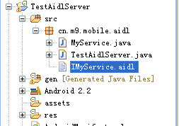
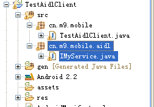
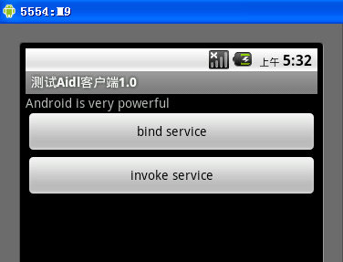

什么是AIDL服务
跨进程访问（AIDL服务）Android系统中的进程之间不能共享内存，因此，需要提供一些机制在不同进程之间进行数据通信。我们知道4个Android应用程序组件中的3个（Activity、Broadcast和Content Provider）都可以进行跨进程访问，另外一个Android应用程序组件Service同样可以。这就是本节要介绍的AIDL服务。
什么是AIDL服务
为了使其他的应用程序也可以访问本应用程序提供的服务，Android系统采用了远程过程调用（Remote Procedure Call，RPC）方式来实现。与很多其他的基于RPC的解决方案一样，Android使用一种接口定义语言（Interface Definition Language，IDL）来公开服务的接口。因此，可以将这种可以跨进程访问的服务称为AIDL（Android Interface Definition Language）服务。
建立AIDL服务的步骤
建立AIDL服务要比建立普通的服务复杂一些，具体步骤如下：
（1）在Eclipse Android工程的Java包目录中建立一个扩展名为aidl的文件。该文件的语法类似于Java代码，但会稍有不同。详细介绍见实例的内容。
（2）如果aidl文件的内容是正确的，ADT会自动生成一个Java接口文件（*.java）。
（3）建立一个服务类（Service的子类）。
（4）实现由aidl文件生成的Java接口。
（5）在AndroidManifest.xml文件中配置AIDL服务，尤其要注意的是，<action>标签中android:name的属性值就是客户端要引用该服务的ID，也就是Intent类的参数值。
实例:
服务器端：
本例中将建立一个简单的AIDL服务。这个AIDL服务只有一个getValue方法，该方法返回一个String类型的值。在安装完服务后，会在客户端调用这个getValue方法，并将返回值在TextView组件中输出。建立这个AIDL服务的步骤如下：
（1）建立一个aidl文件。在Java包目录中建立一个IMyService.aidl文件。IMyService.aidl文件的位置如图所示。

IMyService.aidl文件的内容如下：
interface IMyService { String getValue();
}
IMyService.aidl文件的内容与Java代码非常相似，但要注意，不能加修饰符（例如，public、private）、AIDL服务不支持的数据类型（例如，InputStream、OutputStream）等内容。
（2）如果IMyService.aidl文件中的内容输入正确，ADT会自动生成一个IMyService.java文件。读者一般并不需要关心这个文件的具体内容，也不需要维护这个文件。
（3）编写一个MyService类。MyService是Service的子类，在MyService类中定义了一个内嵌类（MyServiceImpl），该类是IMyService.Stub的子类。MyService类的代码如下：
import android.app.Service;import android.content.Intent;
import android.os.IBinder;
public class MyService extends Service {
public class MyServiceImpl extends IMyService.Stub {
public String getValue() {
return "Android is very powerful";
}
}
@Override
public IBinder onBind(Intent arg0) {
return new MyServiceImpl();
}
}
在编写上面代码时要注意如下两点：
IMyService.Stub是根据IMyService.aidl文件自动生成的，一般并不需要管这个类的内容，只需要编写一个继承于IMyService.Stub类的子类（MyServiceImpl类）即可。
onBind方法必须返回MyServiceImpl类的对象实例，否则客户端无法获得服务对象。
（4）在AndroidManifest.xml文件中配置MyService类，代码如下：
<service android:name=".MyService"><intent-filter>
<action android:name="cn.m9.mobile.aidl.IMyService" />
</intent-filter>
</service>
其中"cn.m9.activity.IMyService"是客户端用于访问AIDL服务的ID。
下面来编写客户端的调用代码。首先新建一个Eclipse Android工程（TestAidlClient），并将自动生成的IMyService.java文件连同包目录一起复制到testAIDL_client工程的src目录中（R文件除外），如图所示。

调用AIDL服务首先要绑定服务，然后才能获得服务对象，代码如下：
import android.R;import android.app.Activity;
import android.content.ComponentName;
import android.content.Context;
import android.content.Intent;
import android.content.ServiceConnection;
import android.os.Bundle;
import android.os.IBinder;
import android.view.View;
import android.view.View.OnClickListener;
import android.widget.Button;
import android.widget.TextView;
public class TestAidlClient extends Activity implements OnClickListener {
/** Called when the activity is first created. */
private IMyService myService = null;
private Button btnInvokeAIDLService;
private Button btnBindAIDLService;
private TextView textView;
private static final String TAG = "TestAIDLClient";
private ServiceConnection serviceConnection = new ServiceConnection() {
@Override
public void onServiceConnected(ComponentName name, IBinder service) {
myService = IMyService.Stub.asInterface(service);
btnInvokeAIDLService.setEnabled(true);
}
@Override
public void onServiceDisconnected(ComponentName arg0) {
}
};
@Override
public void onCreate(Bundle savedInstanceState) {
super.onCreate(savedInstanceState);
setContentView(R.layout.main);
btnInvokeAIDLService = (Button) findViewById(R.id.btnInvokeAIDLService);
btnBindAIDLService = (Button) findViewById(R.id.btnBindAIDLService);
btnInvokeAIDLService.setEnabled(false);
textView = (TextView) findViewById(R.id.textview);
btnInvokeAIDLService.setOnClickListener(this);
btnBindAIDLService.setOnClickListener(this);
}
@Override
public void onClick(View view) {
switch (view.getId()) {
case R.id.btnBindAIDLService:
// 绑定AIDL服务
bindService(new Intent("cn.m9.mobile.aidl.IMyService"),
serviceConnection, Context.BIND_AUTO_CREATE);
break;
case R.id.btnInvokeAIDLService:
try {
textView.setText(myService.getValue());
} catch (Exception e) {
}
break;
}
}
}
在编写上面代码时应注意如下两点：
使用bindService方法来绑定AIDL服务。其中需要使用Intent对象指定AIDL服务的ID，也就是<action>标签中android:name属性的值。
在绑定时需要一个ServiceConnection对象。创建ServiceConnection对象的过程中如果绑定成功，系统会调用onServiceConnected方法，通过该方法的service参数值可获得AIDL服务对象。
首先运行AIDL服务程序，然后运行客户端程序，单击【绑定AIDL服务】按钮，如果绑定成功，【调用AIDL服务】按钮会变为可选状态，单击这个按钮，会输出getValue方法的返回值，如下图所示：

注：这是自己实践的代码，也参考了网上牛人的资料